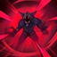

Fome Eterna
INATO: Warwick causa 12 - 46 (com base no nível) (+ 15% AD bônus ) (+ 10% AP) de dano mágico adicional ao contato . Embora esteja abaixo de 50% da saúde máxima , Warwick também cura 100% do dano pós-mitigação causado pela Fome Eterna , aumentado para 250% enquanto estiver abaixo de 25% da saúde máxima.
Mandíbulas da Besta
Warwick ataca o inimigo alvo por 0,264 segundos e o morde,
causando dano mágico , curando -se em uma porcentagem do dano pós-mitigação causado , bem como
aplicandoefeitos ao acertar e ao atacar , e roubo de vida com 100% de eficácia. O dano baseado
na taxa de saúde do alvo é limitado contra monstros.
Enquanto Jaws of the Beast está ativo,
Warwick fica imune ao deslocamento e fixa sua mandíbula no alvo, acompanhando todos os seus
movimentos. A habilidade pode ser mantida para efeitos adicionais.
HOLD: Warwick executa a
mordida e então começa a atacar por 0,5 segundos, estendido se o alvo estiver sob efeito de uma
investida ou deslocamento . Durante a investida, ele salta para trás do alvo.
Caçada de Sangue
Warwick detecta todos os campeões inimigos no mapa que
foram danificados abaixo de 50% de sua saúde máxima por uma fonte aliada, marcando-os com Caçada
de Sangue até que eles se regenerem ou se curem acima desse limite novamente. Ele vê trilhas que
levam até eles e ganha velocidade de movimento adicional enquanto segue uma trilha. Este bônus é
perdido por 0,5 segundos ao entrar no combate de campeão , mas será acumulado novamente ao longo
de 3,5 segundos.
Blood Hunt é colocado em um cooldown estático de 3 segundos durante o combate com campeões. Além
disso, embora nenhum campeão inimigo esteja marcado, o tempo de recarga atual da Caçada de
Sangue se esgota duas vezes mais rápido – é reduzido em um segundo adicional para cada segundo
passado.
Uivo Primordial

Warwick ganha redução de dano por até 2,5 segundos. Uivo Primordial
pode ser relançado após 1 segundo e automaticamente após a duração.
RECAST: Warwick uiva,
encerrando os efeitos do Uivo Primordial e temendo os inimigos próximos por 1 segundo, reduzindo
-os em 90%.
Iniciando Coação infinita O canal de Infinite Duress enquanto Uivo Primordial
ativo iniciará a reformulação sem encerrar o buff de redução de dano prematuramente.
Coação Infinita
Warwick salta na direção alvo com imunidade a controle de grupo ,
parando ao atingir um campeão inimigo. Ele então os derruba e canaliza por até 1,5 segundos para
suprimir , revelar e causar dano mágico a cada 0,25 segundos , revelando -se no processo.
Warwick cura 100% de todo o dano pós-mitigação que ele causa ao alvo durante a Coação Infinita.
Coação Infinita aplica efeitos ao acertar e ao atacar 3 vezes, e roubo de vida com 100% de
eficácia.